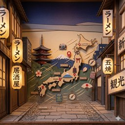

Random Japan Place
Categories
Random
3D walks
3D
Tour
When to go
Halloween
Favorites
Share
Legends
Guess the place
Daily
Tour
Dive
Point to point
All places, as a list
EN
FR
日本語
N
Menu
Random
Search
Random Japan Place
Categories
3D walks
Random, by region
Guided tour
When to go
Legends
My favorites
Halloween
Guess the place
Daily
Music
Language
EN
FR
日本語
Japan
日本
Japon

Loading the map…